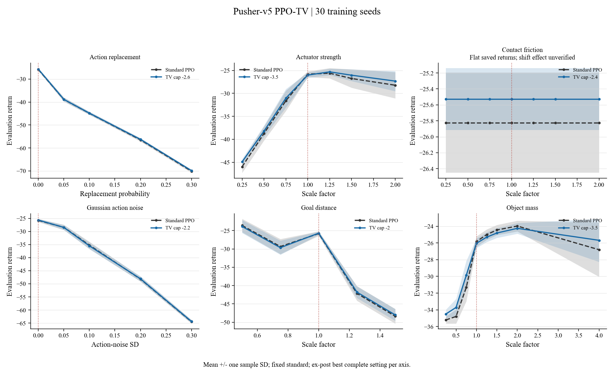
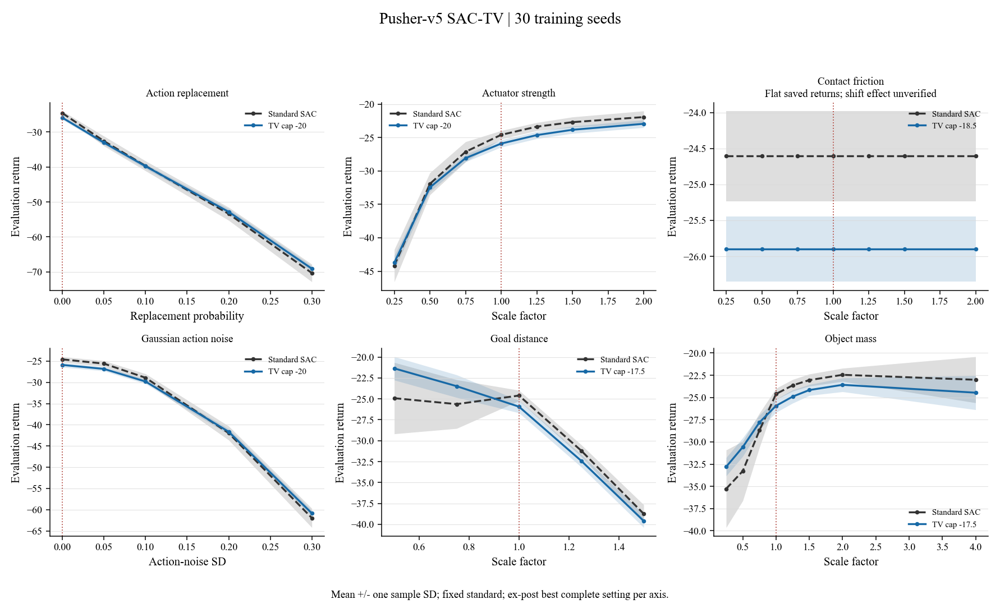
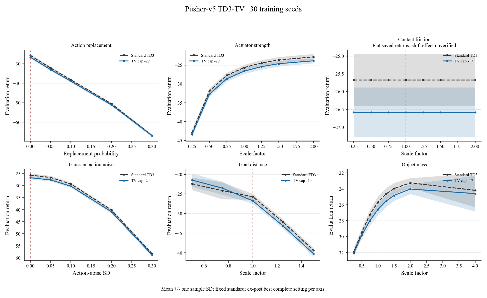
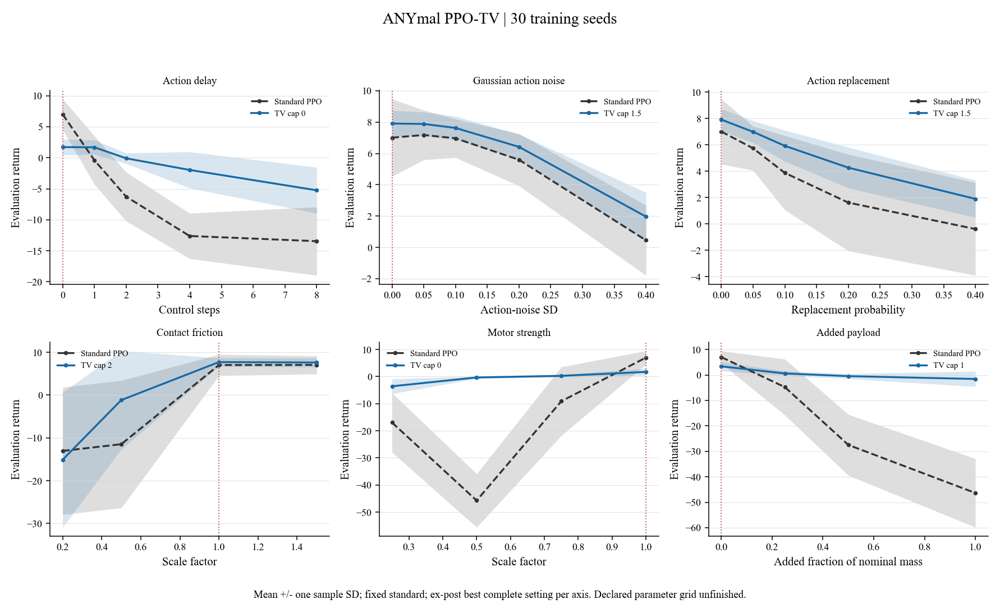
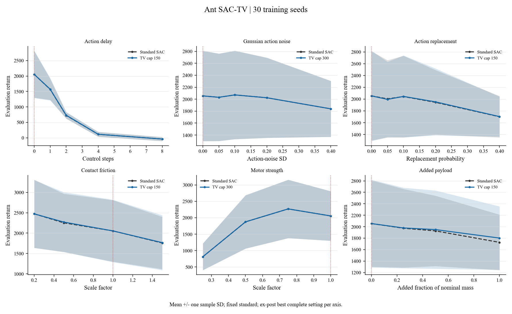
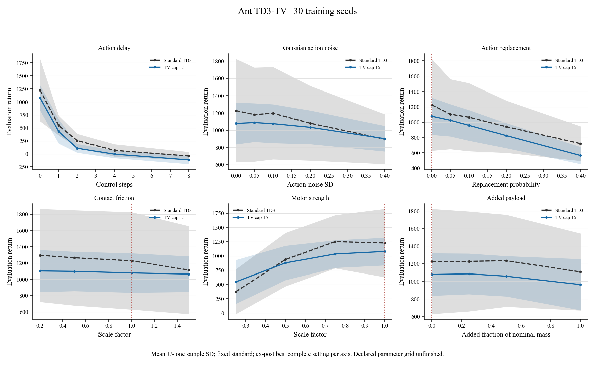
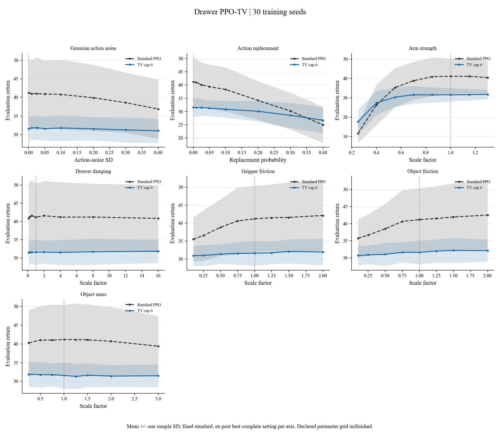
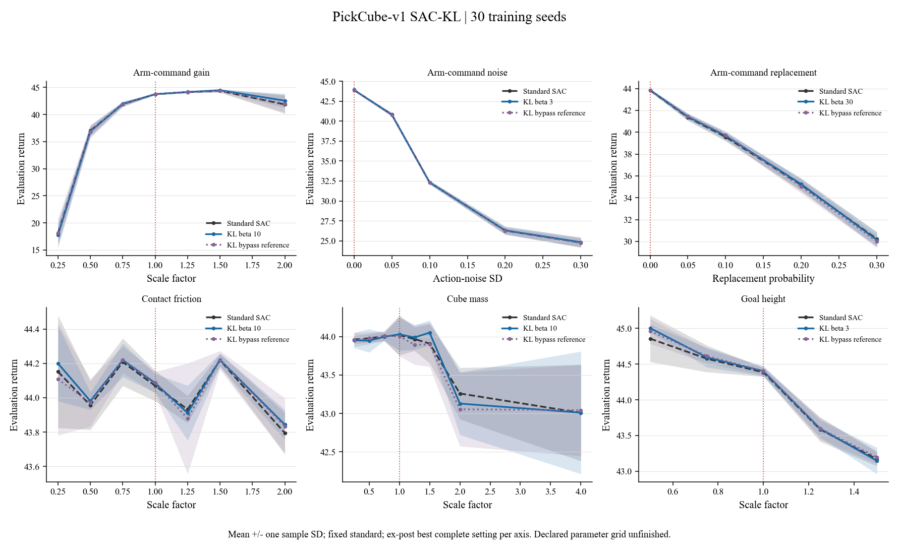

Local fetched snapshot, not live cluster status. Only complete 30-seed settings are plotted. Incomplete settings remain in seed accounting. Means and sample SD are descriptive; ex-post cap selection is not held-out evidence. No competence, significance or physical-success certification. All three Pusher friction axes have flat saved per-policy returns; their intervention effectiveness is unverified.
Combined PDF atlasOverleaf ZIPSelections CSVSeed accountingAll eight declared caps complete; 20 episodes per condition; matched competent-training recipe, not a physical-success certificate.
Overview PDF
Action replacement Actuator strength Contact friction Gaussian action noise Goal distance Object massAll eight declared caps complete; 20 episodes per condition; matched competent-training recipe, not a physical-success certificate.
Overview PDF
Action replacement Actuator strength Contact friction Gaussian action noise Goal distance Object massAll eight declared caps complete; 20 episodes per condition; matched competent-training recipe, not a physical-success certificate.
Overview PDF
Action replacement Actuator strength Contact friction Gaussian action noise Goal distance Object mass4/7 declared TV caps have full 30-seed suites; 29,491,200 native transitions per policy. Competence not certified by returns/completion.
Overview PDF
Action delay Gaussian action noise Action replacement Contact friction Motor strength Added payload6/6 declared TV caps have full 30-seed suites; 512,000 native transitions per policy. Competence not certified by returns/completion.
Overview PDF
Action delay Gaussian action noise Action replacement Contact friction Motor strength Added payload2/6 declared TV caps have full 30-seed suites; 512,000 native transitions per policy. Competence not certified by returns/completion.
Overview PDF
Action delay Gaussian action noise Action replacement Contact friction Motor strength Added payload1/6 declared TV caps have full 30-seed suites; 10,240,000 native transitions per policy. Competence not certified by returns/completion.
Overview PDF
Gaussian action noise Action replacement Arm strength Drawer damping Gripper friction Object friction Object massAvailable full-30 beta settings only; beta 0.1 and 0.3 each retain two failed seeds and are excluded. End-effector-delta 1M-transition recipe; fixed ordinary SAC from the delivered matching cohort. KL bypass retained separately, not certified native parity. No full-grid completion or robust-success claim.
Overview PDF
Arm-command gain Arm-command noise Arm-command replacement Contact friction Cube mass Goal height